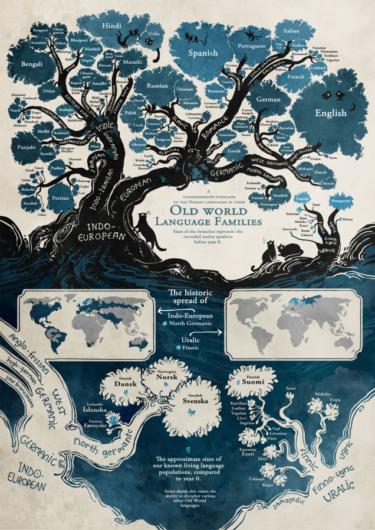

Investigamos en grupo
En grupo, investigad las efemérides relacionadas con las Lenguas que se celebran durante este mes de septiembre. En concreto, los días 23 y 26.
¿Desde cuándo se celebran? ¿Qué organismos las promueven? Recoged toda la información que os parezca de interés al respecto. A continuación, tenéis enlaces a sitios oficiales y dos infografías relacionadas con la diversidad lingüística.
También encontraréis una página de la Unión Europea con una relación de eventos previstos por país para celebrar el Día europeo de las Lenguas. Revisad y comparad las propuestas. ¿Qué país prevé celebrar más actos? ¿Dónde hay menos? ¿Qué eventos se celebrarán en España? ¿Qué os parecen en comparación con el resto de países? ¿Haríais alguna otra actividad?
Toda la información debe quedar recogida en una presentación colaborativa (Drive), en la que participe todo el equipo.
Al final, aparecerá una sección de créditos con el rol de cada miembro y otra sección con enlaces a las fuentes consultadas.
Efemérides
- 23 de septiembre: Día Internacional de las Lenguas de Signos
- 26 de septiembre: Día InternEuropeo de las Lenguas
Infografías
- 20 cosas que desconoces sobre las lenguas
- El árbol genealógico de las lenguas:
